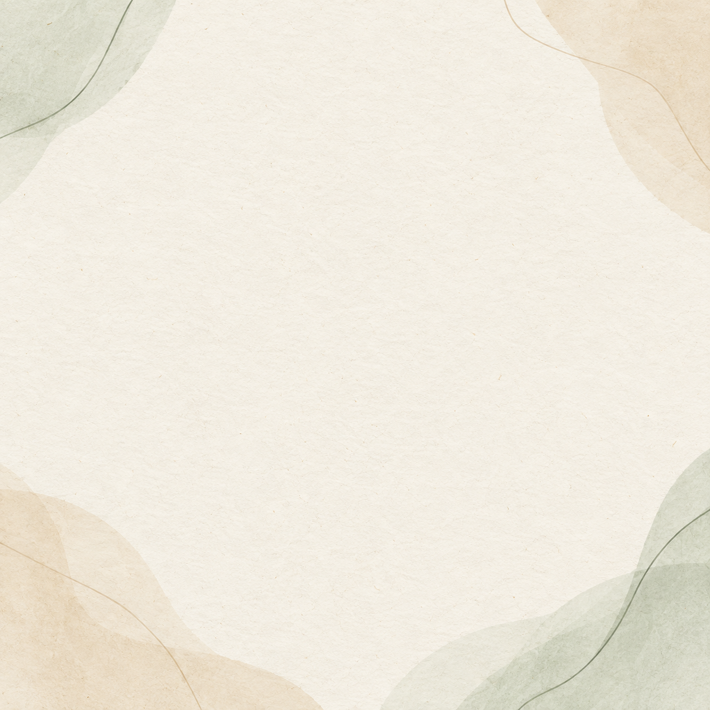

<!doctype html>
<html lang="pt-BR"><meta charset="utf-8"><meta name="viewport" content="width=device-width,initial-scale=1">
<title>Cards — Comunidade MEV Dra Lígia Toledo — Outubro 2026</title>
<style>
*{box-sizing:border-box}body{margin:0;background:#f6f2e9;color:#263d36;font-family:Georgia,serif}.card{width:1080px;height:1080px;position:relative;overflow:hidden;background:#f6f2e9}.texture{position:absolute;inset:0;width:100%;height:100%;object-fit:cover;opacity:.12;mix-blend-mode:multiply}.shape{position:absolute;border-radius:50%;opacity:.9}.a{width:350px;height:350px;left:-130px;top:-110px;background:#e6d5b4}.b{width:320px;height:320px;right:-125px;bottom:-120px;background:#dce7d9}.c{width:160px;height:160px;right:-35px;top:80px;background:#e8edd9}.panel{position:absolute;inset:90px;border:3px solid #c4b58d;border-radius:52px;background:rgba(255,253,249,.92);padding:52px 35px 44px;display:flex;flex-direction:column}.brand{font-size:29px;font-weight:bold;letter-spacing:1px;color:#687468}.rule{border-top:2px solid #c4b58d;margin:23px 0 0}.title{font-size:72px;line-height:1.08;font-weight:bold;text-align:center;margin:auto 35px 24px}.subtitle{font-size:37px;line-height:1.22;color:#677267;text-align:center;margin:0 25px auto}.meta{font-size:29px;color:#687468;letter-spacing:.5px}.steps .title{font-size:64px;margin-top:70px;margin-bottom:38px}.step{font-size:31px;background:#edf2ed;border-radius:20px;padding:18px 30px;margin:10px 25px;color:#33453e}.dark{background:#174a3d}.dark .panel{background:#215545;border-color:#cdbb7a}.dark .brand,.dark .meta{color:#dcc983}.dark .rule{border-color:#cdbb7a}.dark .title{color:#fffaf0}.dark .subtitle{color:#e2e8df}.dark .a{background:#1a5143}.dark .b{background:#2b624f}.dark .c{background:#245a4a}
</style><body><main id="root"></main><script>
const cards=[
['05/10','ALIMENTAÇÃO','Comece pelo que cabe hoje.','Uma escolha possível já abre espaço para a próxima.','light'],
['06/10','ALIMENTAÇÃO','Fome e pressa pedem planejamento gentil.','Prepare uma alternativa simples antes de precisar dela.','dark'],
['07/10','PRÁTICA GUIADA • ALIMENTAÇÃO','Uma refeição com mais presença.','', 'steps',['1. Faça uma pausa antes do primeiro garfo','2. Observe cheiro, cor e temperatura','3. Coma alguns minutos sem tela']],
['08/10','ALIMENTAÇÃO','Qual momento do dia pede mais apoio?','Identificar a barreira já ajuda a planejar.','light'],
['09/10','ALIMENTAÇÃO','Uma escolha diferente não encerra o cuidado.','O próximo momento continua disponível.','dark'],
['12/10','MANEJO DO ESTRESSE','Antes de reagir, faça espaço.','Uma pausa curta pode organizar o próximo passo.','light'],
['13/10','MANEJO DO ESTRESSE','Nem tudo precisa ser resolvido agora.','Escolha o que merece sua atenção primeiro.','dark'],
['14/10','PRÁTICA GUIADA • ESTRESSE','Dois minutos para voltar ao presente.','', 'steps',['1. Apoie os pés onde estiver','2. Perceba três coisas ao redor','3. Escolha apenas a próxima ação']],
['15/10','MANEJO DO ESTRESSE','O que ajuda você a desacelerar?','Reconheça uma pausa que já funciona para você.','light'],
['16/10','MANEJO DO ESTRESSE','Leveza também pode ser planejada.','Proteja uma pausa possível no fim de semana.','dark'],
['19/10','CONEXÕES SOCIAIS','Cuidado também se constrói junto.','Um contato simples pode caber no seu dia.','light'],
['20/10','CONEXÕES SOCIAIS','Pedir apoio é uma escolha de autonomia.','Comece com um pedido pequeno e claro.','dark'],
['21/10','PRÁTICA GUIADA • CONEXÕES','Uma conversa com mais presença.','', 'steps',['1. Escolha uma pessoa disponível','2. Pergunte e escute sem apressar','3. Termine com um agradecimento sincero']],
['22/10','CONEXÕES SOCIAIS','Que conexão você quer cultivar?','Nomear aproxima o gesto da vida real.','light'],
['23/10','CONEXÕES SOCIAIS','O fim de semana também pode ter companhia.','Planeje um encontro simples ou uma mensagem.','dark'],
['26/10','AMBIENTE E ESCOLHAS','Deixe a próxima escolha mais fácil.','Seu ambiente pode trabalhar a seu favor.','light'],
['27/10','COMPORTAMENTOS DE RISCO','Entre o impulso e a escolha, existe uma pausa.','Perceba a pista antes de agir no automático.','dark'],
['28/10','PRÁTICA GUIADA • AMBIENTE','Ajuste uma pista ao seu redor.','', 'steps',['1. Escolha um hábito que quer apoiar','2. Deixe uma pista visível para ele','3. Retire uma distração do caminho']],
['29/10','AMBIENTE E ESCOLHAS','Qual ajuste faria diferença hoje?','Pequenas mudanças diminuem o esforço de lembrar.','light'],
['30/10','INTEGRAÇÃO DOS PILARES','Seu mês não precisa ser perfeito para valer.','Escolha o que deseja levar para novembro.','dark']
];
const i=Math.max(0,Math.min(cards.length-1,Number(new URLSearchParams(location.search).get('card'))||0));const [date,pillar,title,sub,kind,steps]=cards[i];const isSteps=kind==='steps';document.getElementById('root').innerHTML=`<section class="card ${kind==='dark'?'dark':''} ${isSteps?'steps':''}"><i class="shape a"></i><i class="shape b"></i><i class="shape c"></i><div class="panel"><div class="brand">COMUNIDADE MEV DRA LÍGIA TOLEDO</div><div class="rule"></div>${isSteps?`<div class="title">${title}</div>${steps.map((x,n)=>`<div class="step">${n+1}. ${x.replace(/^\d\. /,'')}</div>`).join('')}<div style="flex:1"></div>`:`<div class="title">${title}</div><div class="subtitle">${sub}</div>`}<div class="meta">${pillar} • ${date}</div></div></section>`;
</script></body></html>
